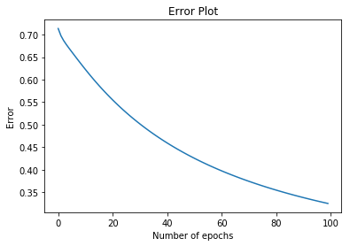
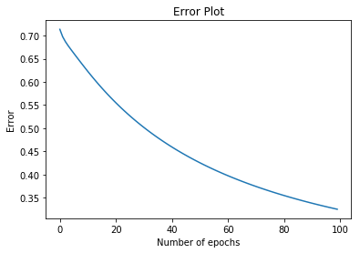
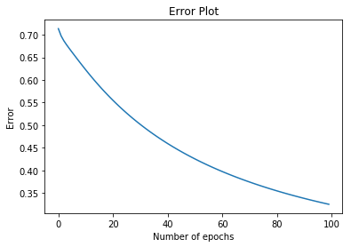

05/27/2020 - Gradient Descent Algorithm
An excersize in my Udacity class was to implement the gradient descent algorithm to
find a line that best separates two sets of data on a graph. I thought it was a cool
algorithm, so here's the output.
 

An excersize in my Udacity class was to implement the gradient descent algorithm to
find a line that best separates two sets of data on a graph. I thought it was a cool
algorithm, so here's the output.
